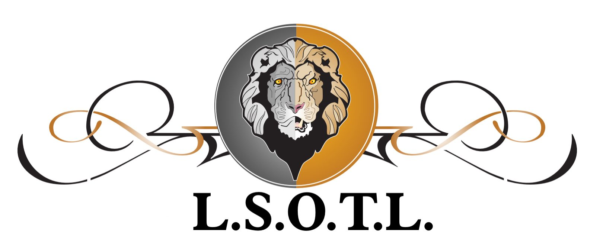
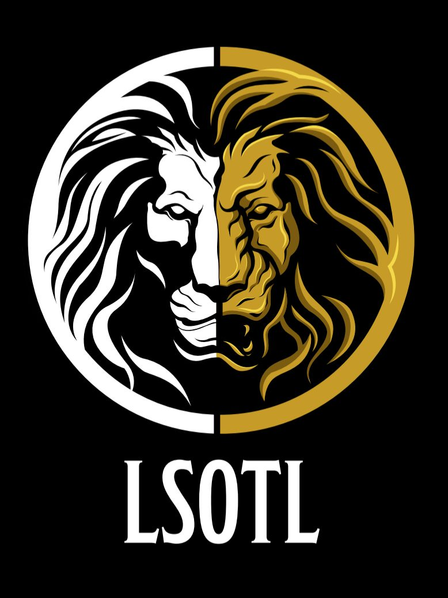
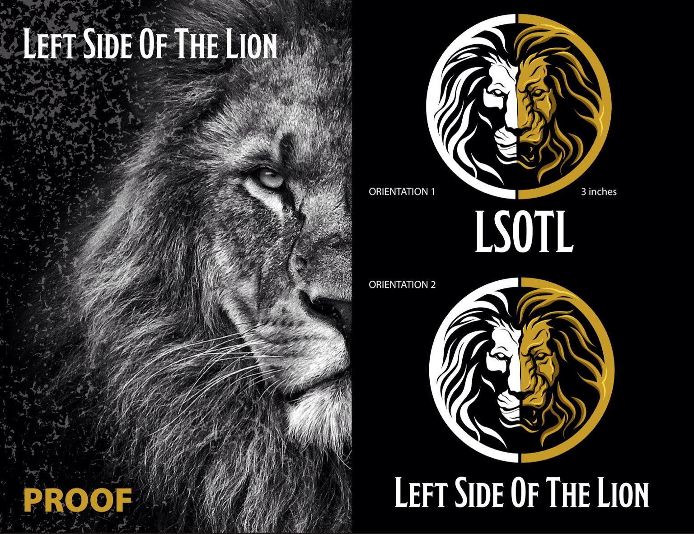
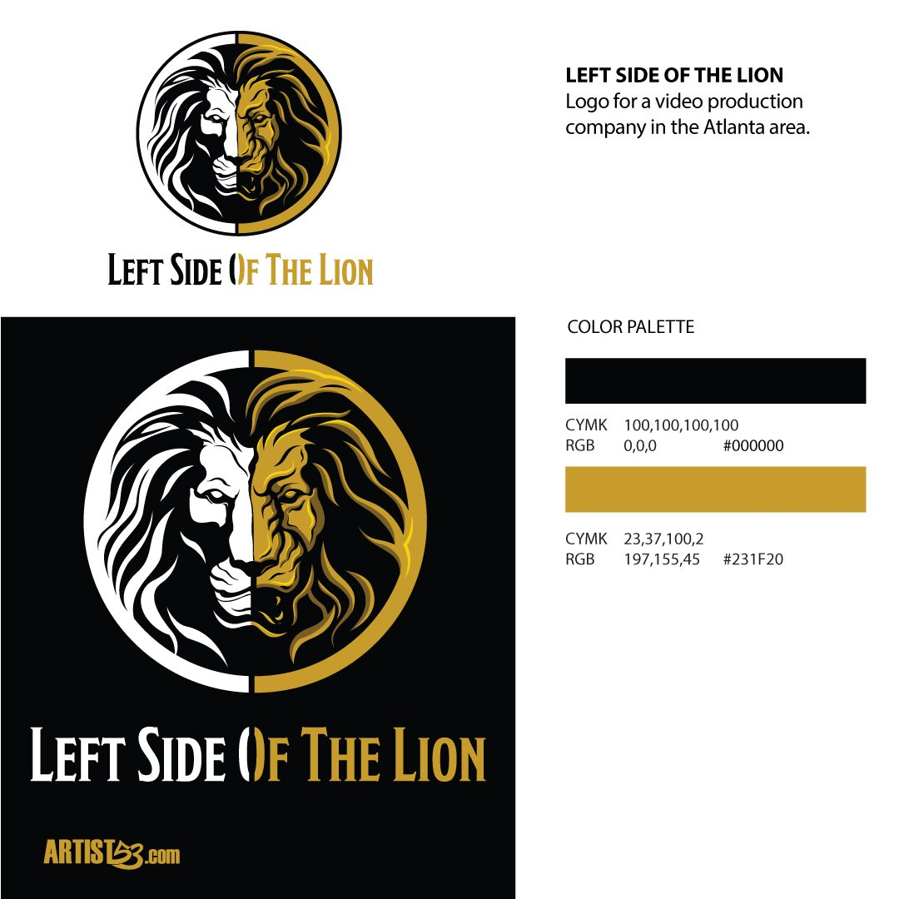
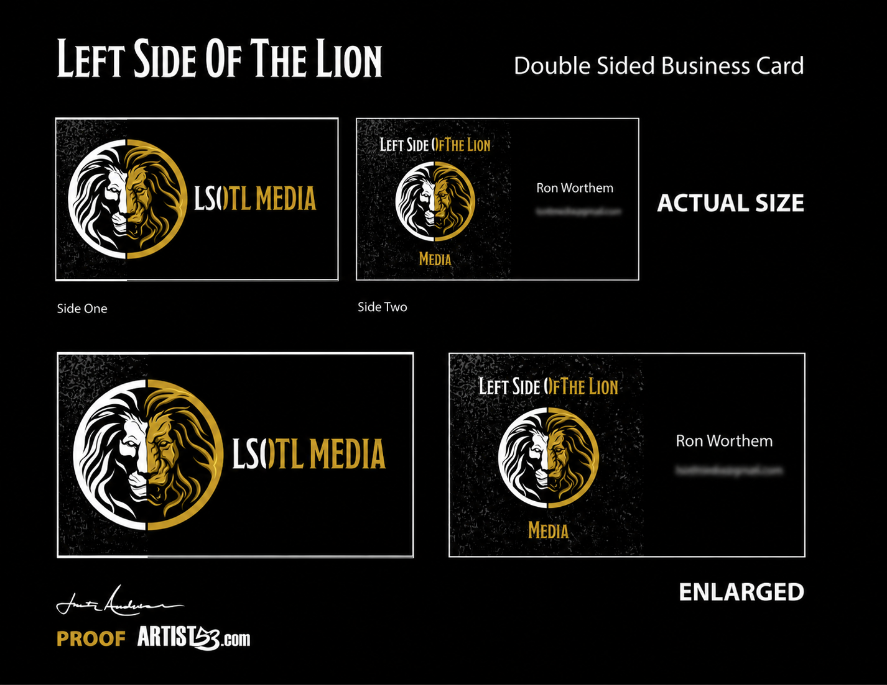

Film · Video · Media Identity
Left Side Of The Lion
A look at how an established film, video and media identity was reworked into a cleaner, more focused mark. The redesign keeps the strength and black and gold character of the original while giving LSOTL Media a symbol built for modern production, content and branded media use.
Back To Logos

01 / Previous Identity
The Starting Point
A Strong Idea That Needed A Cleaner Mark
The previous identity already had the ingredients worth keeping: the lion, the contrast between light and dark, and a warm gold accent. The challenge was not to abandon that personality. It was to simplify the idea so the brand could read faster, reproduce more consistently and feel stronger across film, video and media applications.
What Stayed
The lion remained the center of the identity. Black, white and gold also stayed as the visual foundation, preserving continuity between the old brand and the redesign.
What Changed
The ornamental framing was stripped away and the composition was tightened into a circular symbol. That shift moved the identity away from a decorative illustration and toward a practical, recognizable brand mark.
The Transition
The redesign was an evolution rather than a restart. The goal was to make the lion easier to recognize while keeping enough of the original visual DNA that the new mark still felt like Left Side Of The Lion.
02 / The New Mark
ClientLeft Side Of The Lion IndustryFilm, Video & Media ServicesLogo Redesign & Identity DeliverablesLogo System & Brand Applications
Identity Evolution
Two Sides. One Lion.
The refined mark places two contrasting lion treatments inside one circular form. White and black define the left side while gold carries the right, creating a direct visual interpretation of the name and a much stronger standalone symbol.


03 / Brand System
Typography
Identity Reference
Color + Typography
A Tight Visual Language
The identity stays intentionally restrained: black and white create maximum contrast while two gold tones add warmth and a premium edge. A condensed display typeface gives the name a strong editorial presence beside the detailed lion mark.
Color PaletteWhite · #FFFFFF
Black · #000000
Gold · #C79B28
Deep Gold · #7A5B0F
Modesto Condensed
LEFT SIDE OF THE LION
The condensed display face supports the primary mark and gives the Left Side Of The Lion name a strong, cinematic presence without competing with the lion symbol.
Brand Sheet
The primary lockup and essential palette presented together for consistent use across film, video and media applications.

04 / Applications

Identity In Practice
Built Beyond The Logo
The system was extended into business card and media concepts, proving that the split lion mark could move between symbol only, abbreviated LSOTL and full name treatments while keeping the same visual voice across film, video and media branding.

Flexible By Design
The circular lion can work as the hero mark, while LSOTL and Left Side Of The Lion provide shorter and longer naming options. That gives the identity enough range for title cards, video branding, social content, production collateral and future media applications without changing its core look.